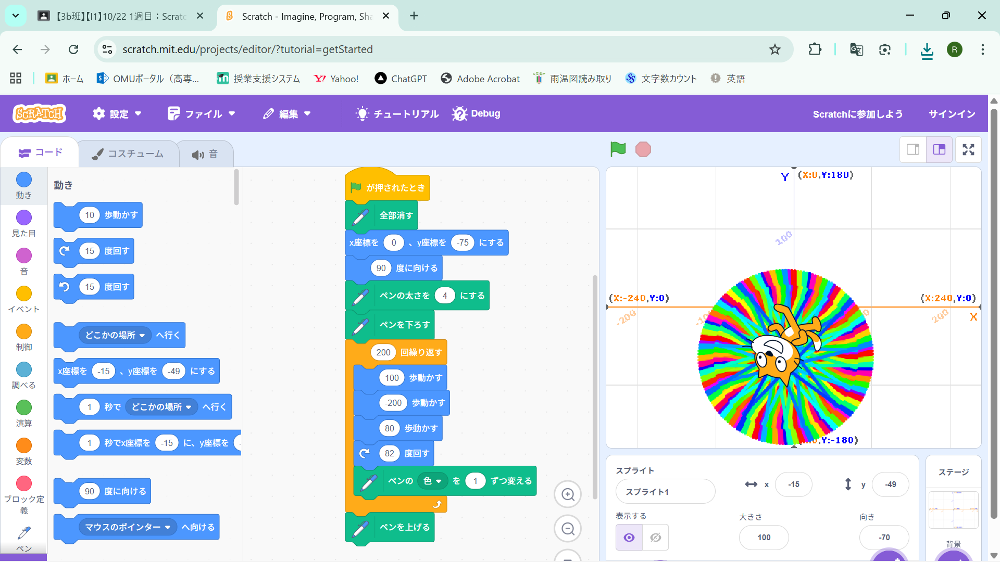
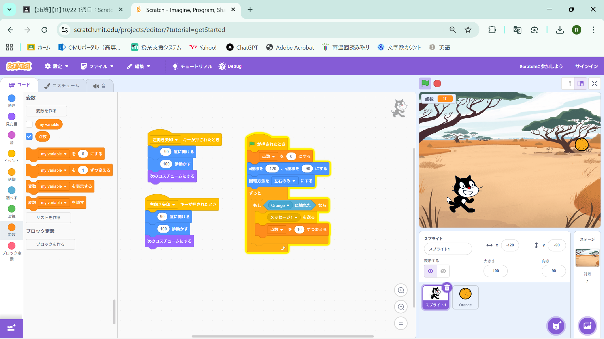

1週目のレポート ： 公大高専１年実習I-1
3b班31番 中原諒
第1週目
1-1 サイエンスアート

1.内容
scratchというサイトを使い、ネコを移動させその動きに合わせて線を引くプログラムを作成するもの。
書くたびに線の色を変え、繰り返し移動させて図形を描く。
2.感想
図を描いて色を変えるときに初めの色を決めたり、曲がる角度を変えたりすると全く違う色や図形ができて、
面白いと思った。きれいな形を作ることができたかなと思う。いろいろな形を作れるような気がする。
1-2 ゲーム

1.内容
ネコを移動させて落ちてくるリンゴをつかむゲームを作成した。キーボードの矢印キーを使って、
ネコを移動させる。リンゴをつかむと点数が追加されるプログラムになっている。
2.感想
scratchではじめて音の出し方を学ぶことができた。また、リンゴの落とす速さを変えるときに、
乱数というものを使った。メッセージを送るというプログラムも使ってしっかりゲーム性があって面白かった。
1-3 ホームページ作成
私のホームページ
1.内容
Githubをつかって自分のホームページを作るもの。自分のホームページを作って自己紹介をしたり、
レポートを提出したり、画像を添付したりするためになっている。
2.感想
今までホームページの作り方は全くわからなかったけど今回のを生かすことができれば、
自分でブログなども作れたりするのかなと思った。また、手軽にインターネットで発信できるようになっていると
あたらめて感じた。
各ページへのリンク
1週目のレポート
2週目のレポート
3週目のレポート
私のホームページ